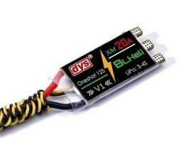
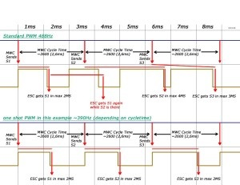
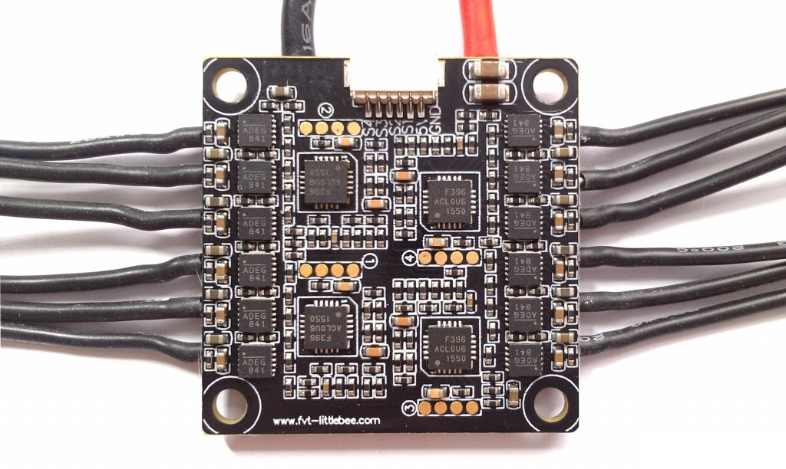

无刷电机能转起来全靠这个电调了
电调的英文叫Electronic Speed Controller(ESC)，直译一下就是电子调速器。电调从飞控接收到油门数据，驱动无刷电机在指定的速度下转动。高可靠的电调保证了稳定和平滑的飞行体验。
额定电流
额定电流是电调首先需要考虑的一个参数，它的单位是安培。如果电机转动需要的电流超过了电调的额定电流，电调就有可能发热损坏，严重的情况下甚至可能导致电调自燃。
在确定额定电流的时候主要考虑三个因素：马达的KV值，马达的尺寸，浆的尺寸。
具体如何确定所需的电流的呢？你可以用电流表在推力台上测试电机的电流，或者也在网上根据你电机和浆的配置来查找别人提供的测试结果。有一些厂家甚至会在产品页面上提供这些信息。
比如你测出来电机带浆（需要专业测试台，注意安全）以最大的速度旋转是需要10A的电流，那么12A的电调就足够用了。当然选用20A的电调也能正常工作，但是这会增加飞机重量也增加成本，好处也有，大电流电调发热小点，能量效率会高些。
要知道在实际飞行的是电机是很难达到最大转速的，即使达到了也是瞬间的事情，所以有些小伙伴在选电调的时候还会酌情降低额定电流。
电调固件
跟飞控一样，电调也有很多固件。
-
SimonK 和 BlHeli 说点历史吧，SimonK 和 BlHeli是两个最老的开源电调固件，最初由无线电爱好者们开发和维护。在过去，固件都是由电调厂家自己烧写的，固件是封闭的，可配置的参数也不多，所以很多无线电爱好者们就自己将SimonK或者Blheli烧写到他们自己的电调里面。慢慢的，这些开源的固件就逐渐成了标准固件，很多电调也出厂自带BLHeli或者SimonK。 目前大部分的玩家会选择BlHeli，因为功能更多并且用户体验更好。SimonK 也渐渐的被淘汰了。
-
BLHeli_S BLHeli_S是BlHeli的升级版本，主要针对Busybee处理器和PWM硬件开发的。BLHeli_S拥有更简单的用户交互接口。
-
BLHeli_32 BLHeli_32是BlHeli的第三版本，是BlHeli最新的一个版本。它是专门针对32位的电调而设计。这些更强大的处理器能达到更流畅、更精确和更可靠的性能。但是遗憾的是BLHeli_32变成不开源的了。
-
KISS KISS也不是开源的，它只能用于KISS的电调上面。
处理器
跟飞控一样，电调也需要处理器的，不过电调的处理器可能比飞控要弱一些些。
电调的处理器主要分为三个不同的阵营
- ATMEL 8-bit， 支持SimonK 和 BLHeli 固件
- SILABS 8-bit，支持BLHeli 和 BLHeli_S 固件
- Atmel ARM Cortex 32-bit, 支持BLHeli_32
ATMEL 8-bit的电调是在SILABS流行之前最通用的电调。接着SILABS电调凭借其在8-bit上超过ATMEL的性能也同样流行起来。自2017年以后，32位的电调也越来越常见了。
同样是SliLabs系列用不同的处理器他们的性能也是不一样的。比如SliLabs F39X(F390和F396)就要比SliLabs F330性能强很多。F330的主频较低，在带动高KV值得马达的是就会碰到点问题。而F39x就没有这方面的问题，并且F39x还能完美支持Multishot和Oneshot43协议。
小蜜蜂BusyBee处理器算是F330和F39x的升级版，一般搭载BLHeli_S固件。根据性能的不同有BusyBee1 (EFM8BB10F8)和BusyBee2(EFM8BB21F16)两款。这些处理器的好处是用特殊的硬件产生能够与处理器同步占空比的PWM信号，让油门的响应更平滑。它们还支持最新的D-Shot 协议。
作为总结，电调处理器的性能排序是这样的 BB2 > BB1 > F39X > F330 > Atmel-8bit

很多电调依旧使用8位的处理器，但是从2016年以后，一些基于STM32的32位的处理开始显现。这些性能强大的32位解锁了很多新的功能，比如ESC遥测，切换马达转动方向等。
通信协议
通信协议决定了飞控和电调之间的通信速度有多快，通信速度对四轴的稳定性有很大的影响。最早的通信方式是PWM，它具有长达2ms的延时，然而最快的Multishot能将延时减小到5到25毫秒。

当下一般会用到的通信协议，从老到新有如下列表, 同时也附上了各自的延时范围：
- Standard PWM(1000us - 2000us)
- Oneshot 125(125us - 250us)
- Oneshot 42(42us - 84us)
- Multishot(5us - 25us)
- DShot
- DShot150(106.8us)
- DShot300(53.4us)
- DShot600(26.7us)
- DShot1200(13.4us)
- ProShot
输入电压
一些电调能够支持6s的电池，一些可能只能达到3s，确保你的电调和你将要用到的电池能够匹配上。用过高的电压去驱动电调有可能吧电调甚至马达给烧毁了。
4合1电调
4合1电调将之前4个独立的电调集中到单独一块板子上了，它的尺寸跟飞控、分压板一样大小，所以可以叠起来安装，人们一般称这种叠起来的几个板子叫做飞塔，这种飞塔对于小型穿越机来说是非常有用的。他能减少很多乱七八糟的接线，减轻飞机整体重量。也有一个缺点就是一旦一个电调损坏了，整块4合1的板子就要更换，维修成本会高些，相当于便利性和风险之间的权衡。

Comments
There are no comments yet.